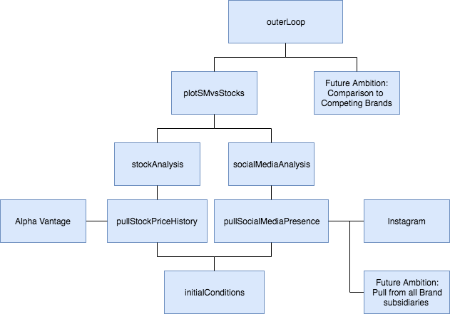

Retail Fashion-Stock Correlation
August 2018 - December 2018
This page is still under construction.
1.Introduction
Social media is an increasingly significant aspect of our daily lives; millennials and generation-X especially. As these generations becoming an increasing economic force, it begs the question, does social media play a role in our economy? I seek to find a correlation between the social media presence of clothing retailers and their stock index. 1.Introduction We are going to try and correlate a clothing retailers stock price changes with their social media presence. For example, if Nike’s stock price rose in June but fell in July, did they receive/lose a correlating number of likes, comments, video plays, etc.? Equations 1.1 and 1.2 respectively illustrate how we obtain ∆S%and ∆P% by dynamically defining S and P. ∆S$ being the change in price, ∆S% being the same change calculated as a percentage, and S being the average daily closing stock price for the time period we parse, containing N data points. The constant k is a dimensionless scale factor I intruduced where k = 1 · 10-7.2. Methodology
2.1 Interpolating Dataset to Estimate Ig Users on any given day
3. Code Structure
4.4 Instagram users at time of post
January 2013 IG was to have an estimated 90 million users, as of June 2018 that figure is now 1 billion. Currently S is calculated from the retailers first post up until it's most recent. I have now acquired a dataset with sparsely separated datapoints and will linearly interpolate between them to estimate IG users at any given month. Instagram launched October 6th, 2010 but the earliest data point from Statista is January 2013. To address this, I simply used linear interpolation from zero to 90 million. Similarly, I have no information for volume of users after June 2018. It is safer to assume in our age of information, most individuals are already on the platform and any date after June 1st, 2018 will be assigned a volume of 1 billion.
5. Results and Next Steps
5.1 Improving Social Media Presence from IG
Adding percent change in comments, as they also reflect on the social media presence a company holds on the Instagram platform.5.2 Integrating Twitter & other SM Platforms
Say we also integrate Twitter, YouTube, Facebook, and maybe even Snapchat. Then we'd have to assign each othese platforms 'weight'. Specifically, what is the weight of their platforms impact on this Social Media Presence. With the potential question of also integrating Natual Language Processing, should this Social Media Presence be interpreted in multiple variables. Relevancy, current public opinion, and historic public opinion come to mind. Is the company currently relevant? Are they in the headlines? What is the current public outlook? After Nike's Kaepernick campaign, the "current public outlook" was between political lines. What about the historic public opinion? Take Beyond Petroleum, who will forever be remembered for their oil spills.
Disclaimer
I declare no affiliation, sponsorship, nor any partnerships with any registered trademarks. If your company, brand, or trademark is referenced and you would like it blurred or omitted completely, please reach out to me at the email address contained in the footer of this page.
The information contained herein is for informational purposes only, and has been compiled from sources deemed reliable, and it is accurate to the best of my knowledge and belief as of 9:00PM PST September 20th, 2018. However, I cannot guarantee its accuracy, completeness and validity and cannot be held liable for any errors or omissions. Changes are periodically made to this website and may be made at any time. To the maximum extent permitted by law, I disclaim any and all liability in the event any information, commentary, analysis, opinions, advice and/or recommendations prove to be inaccurate, incomplete or unreliable, or result in any investment or other losses.
Any information contained on this website should not be considered legal or financial advice. I am not an attorney, accountant or financial advisor. You should consult with an attorney or other professional to determine what may be best for your individual needs. No one should make any investment decision without first consulting his or her own financial advisor and conducting his or her own research and due diligence. Content contained on or made available through this website is not intended to and does not constitute legal advice or investment advice and no attorney-client relationship is formed. Your use of the information on this website or materials linked from the Web is at your own risk.
Scraping data from a search engine results page is almost always going to break the Terms of Service of the search provider. Such Terms of Service probably only exist to deter those who wish to use the data to create a competing service which could potentially undermine the value of the scraped engine. If, however, one wishes to use the data for some other kind of endeavour and they don't abuse the request rate then doing so probably won't infuriate the provider. Nonetheless, I do warn you that if you run the code we shared in the GitHub Repository associated with this project below you are doing it entirely at your own risk.
I do not in any way condone the practice of illegal activities in relation to hacking. All teachings with regards to malware and other exploits are discussed for educational purposes only and are not written with the intention of malicious application.
I declare no affiliation, sponsorship, nor any partnerships with any registered trademarks. If your company, brand, or trademark is referenced and you would like it blurred or omitted completely, please reach out to me at the email address contained in the footer of this page.
The information contained herein is for informational purposes only, and has been compiled from sources deemed reliable, and it is accurate to the best of my knowledge and belief as of 9:00PM PST September 20th, 2018. However, I cannot guarantee its accuracy, completeness and validity and cannot be held liable for any errors or omissions. Changes are periodically made to this website and may be made at any time. To the maximum extent permitted by law, I disclaim any and all liability in the event any information, commentary, analysis, opinions, advice and/or recommendations prove to be inaccurate, incomplete or unreliable, or result in any investment or other losses.
Any information contained on this website should not be considered legal or financial advice. I am not an attorney, accountant or financial advisor. You should consult with an attorney or other professional to determine what may be best for your individual needs. No one should make any investment decision without first consulting his or her own financial advisor and conducting his or her own research and due diligence. Content contained on or made available through this website is not intended to and does not constitute legal advice or investment advice and no attorney-client relationship is formed. Your use of the information on this website or materials linked from the Web is at your own risk.
Scraping data from a search engine results page is almost always going to break the Terms of Service of the search provider. Such Terms of Service probably only exist to deter those who wish to use the data to create a competing service which could potentially undermine the value of the scraped engine. If, however, one wishes to use the data for some other kind of endeavour and they don't abuse the request rate then doing so probably won't infuriate the provider. Nonetheless, I do warn you that if you run the code we shared in the GitHub Repository associated with this project below you are doing it entirely at your own risk.
I do not in any way condone the practice of illegal activities in relation to hacking. All teachings with regards to malware and other exploits are discussed for educational purposes only and are not written with the intention of malicious application.